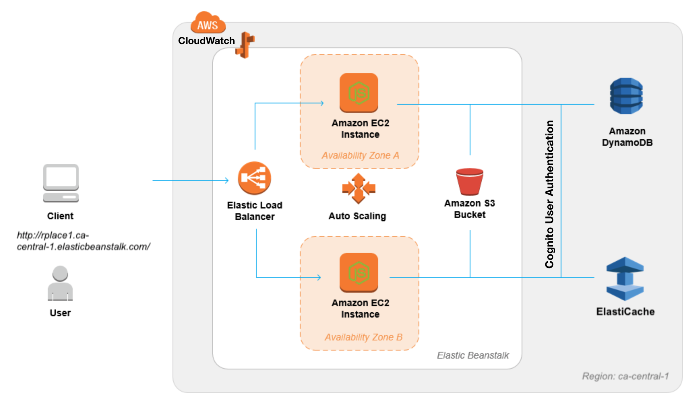

Building r/place
Purpose
As part of the final project for CSC409 - Scalable Computing, we were tasked with recreating r/place using Amazon Web Services (AWS). The purpose was to familiarize ourselves with AWS and it's various capabilities.

Event Flow
- User connects with our website.
- User prompted to log into Amazon account and redirected to Amazon login.
- Once successfully logged in, they are redirected back to our website and are able to view the r/place canvas.
- User is able to set a pixel using a colour map or RGB codes, and then a timer begins once pixel is placed.
- After timer expires, user can edit again. Logout option available as well.
Services Used
AWS Elasticache: as Redis to store MAP on server for quick reads and writes.
AWS DynamoDB: For storing user info and their last committed pixel timestamp and the history of the map (who placed what pixel where and when, including geolocation because data sells).
FingerprintJS2: Initially used to identify unique individuals based on browser fingerprint.
Node.js along with EJS (Embedded JavaScript template for HTML): For server and front end communication.
AWS Application Load Balancer (ALB): Used to scale up and down while maintaining high availability.
AWS CloudWatch: Used to monitor number of DynamoDB read and writes.
AWS Cognito: Replaced FingerprintJS2 for a more secure way of accessing rights to update map.
There were some tools we wanted to use such as AWS Neptune for data modelling and AWS Athena for DynamoDB data querying but due to Amazon-Canada limitations, we were not able to go down that path.
Architecture
